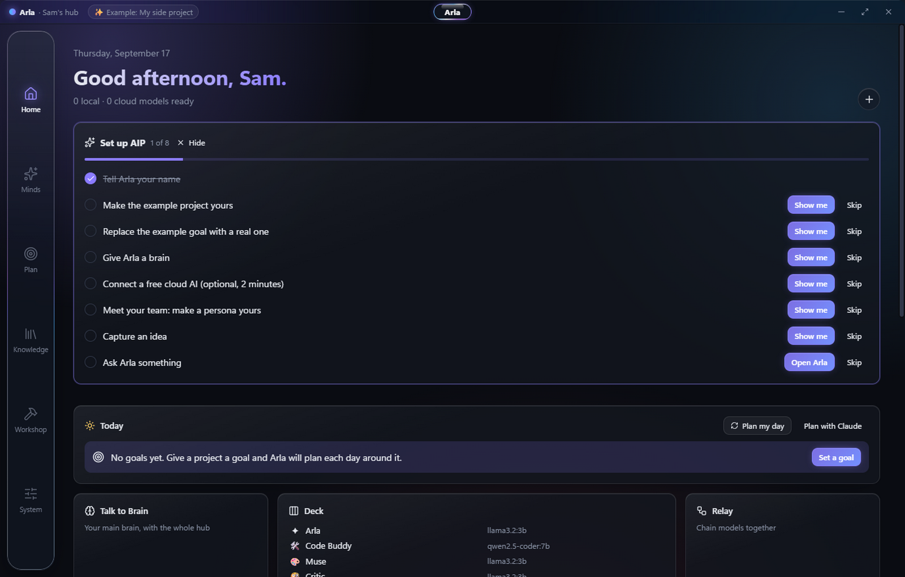
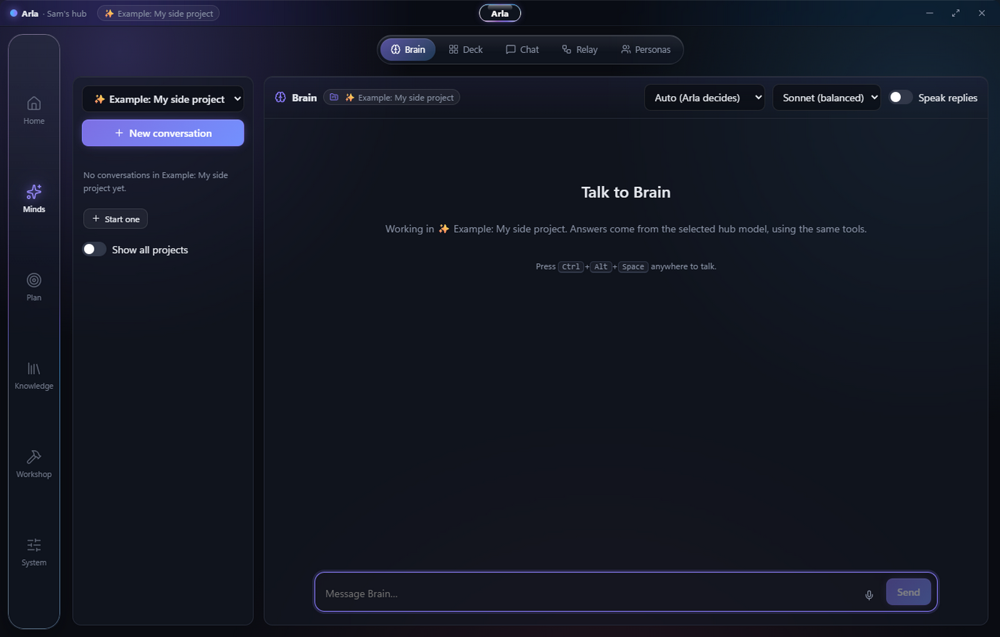
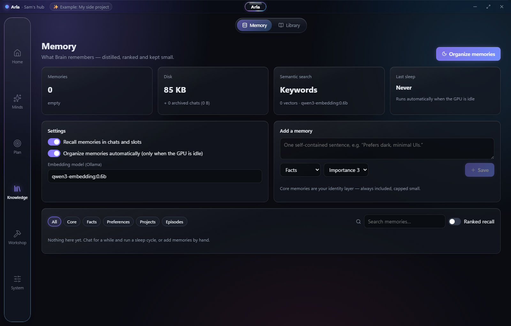

One place for all your AI. It runs on your own computer, works from your phone, and learns how you work.
Windows · Android (soon)Early preview · v0.1.0Private by default
Arla brings together the models on your machine, free cloud services and any paid accounts you have. Tell her what you want in plain words: she picks the right mind for the job, brings in specialists when a task needs a team, and makes the change for you. The goal is simple — less money spent, less time lost, less attention wasted, and less of your potential sitting unused in tools that forget you between sessions.
Windows may warn about an unknown publisher until the installer is signed. Android version coming to the Play Store.

Home — today's plan, goals and your models at a glance

Brain — one conversation, routed to the right model

Memory — distilled, ranked, and kept small
What it does
Ask in plain words. Change settings, open pages, manage goals and your inbox, or have her do the work.
The right mind for each job. Each request is scored for difficulty and stakes, then given to the smallest model that can do it well.
A Timeline that keeps itself honest. Deadlines paced to how you actually work, milestones marked from real evidence, and a re-plan when things slip.
Your knowledge, searchable. Memory that tidies itself, plus your own notes, PDFs and code.
Bring your chat history from ChatGPT, Claude, Gemini or Copilot.
Private by default. No account, no servers of ours, no tracking.
What you need Windows 10 or 11. For models on your own computer, install Ollama (free). No graphics card required: Arla sizes models to the machine it finds.